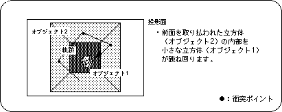
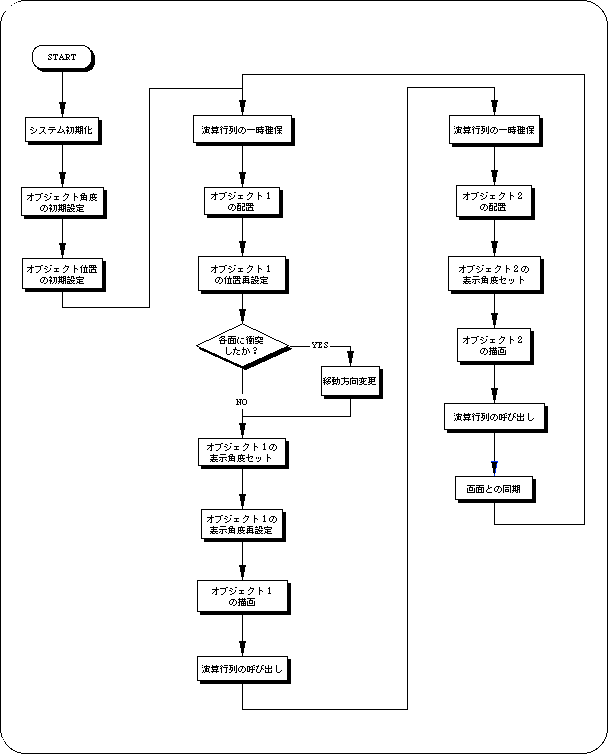

★SGL User's Manual
★PROGRAMMER'S TUTORIAL
★SGL User's Manual
★PROGRAMMER'S TUTORIAL
描画 ：ポリゴンの定義 （第2章） 光源 ： 光源の設定と光源によるポリゴン面の変化 （第3章） 座標系 ：セガサターンにおける座標系 （第4章） モデリング変換：オブジェクトの回転、移動、拡大縮小など （第4章） 描画領域 ：ウィンドウ及びクリッピング（第4章）

/*----------------------------------------------------------------------*/
/* Cube Action */
/*----------------------------------------------------------------------*/
#include "sgl.h"
#define REFLECT_EXTENT toFIXED(85.0)
#define XSPD toFIXED(1.5)
#define YSPD toFIXED(2.0)
#define ZSPD toFIXED(3.0)
extern PDATA PD_PLANE1, PD_PLANE2;
void ss_main(void)
{
static ANGLE ang1[XYZ], ang2[XYZ];
static FIXED pos1[XYZ], pos2[XYZ], delta[XYZ], light[XYZ];
slInitSystem(TV_320x224, NULL, 1);
slPrint("demo A", slLocate(9,2));
ang1[X] = ang1[Y] = ang1[Z] = DEGtoANG(0.0);
ang2[X] = ang2[Y] = ang2[Z] = DEGtoANG(0.0);
pos1[X] = pos2[X] = toFIXED( 0.0);
pos1[Y] = pos2[Y] = toFIXED( 0.0);
pos1[Z] = pos2[Z] = toFIXED(100.0);
delta[X] = XSPD, delta[Y] = YSPD, delta[Z] = ZSPD;
light[X] = slSin(DEGtoANG( 30.0));
light[Y] = slCos(DEGtoANG( 30.0));
light[Z] = slSin(DEGtoANG(-30.0));
while(-1){
slLight(light);
slPushMatrix();
{
slTranslate(pos1[X], pos1[Y], pos1[Z] + toFIXED(270.0));
pos1[X] += delta[X];
pos1[Y] += delta[Y];
pos1[Z] += delta[Z];
if(pos1[X] > REFLECT_EXTENT){
delta[X] = -XSPD, pos1[X] -= XSPD;
} else if(pos1[X] < -REFLECT_EXTENT){
delta[X] = XSPD, pos1[X] += XSPD;
}
if(pos1[Y] > REFLECT_EXTENT){
delta[Y] = -YSPD, pos1[Y] -= YSPD;
} else if(pos1[Y] < -REFLECT_EXTENT){
delta[Y] = YSPD, pos1[Y] += YSPD;
}
if(pos1[Z] > REFLECT_EXTENT){
delta[Z] = -ZSPD, pos1[Z] -= ZSPD;
} else if(pos1[Z] < -REFLECT_EXTENT){
delta[Z] = ZSPD, pos1[Z] += ZSPD;
}
slRotX(ang1[X]);
slRotY(ang1[Y]);
slRotZ(ang1[Z]);
ang1[X] += DEGtoANG(3.0);
ang1[Y] += DEGtoANG(5.0);
ang1[Z] += DEGtoANG(3.0);
slPutPolygon(&PD_PLANE1);
}
slPopMatrix();
slPushMatrix();
{
slTranslate(pos2[X], pos2[Y], pos2[Z] + toFIXED(170.0));
slRotY(ang2[Y]);
slRotX(ang2[X]);
slRotZ(ang2[Z]);
slPutPolygon(&PD_PLANE2);
}
slPopMatrix();
slSynch();
}
}

★SGL User's Manual
★PROGRAMMER'S TUTORIAL